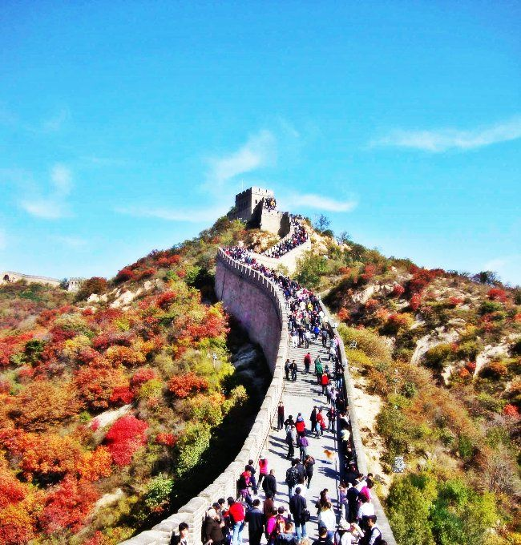

| モモの世界遺産旅行記: 世界編Vol.001-025 (The BBB: Breakthrough Bandwagon Books) | |
| モモ | |
| The BBB: Breakthrough Bandwagon Books (2015) | |
Momo Meets the World Heritage Sites: On the Globe Vol.001-025 ( Jp )
（邦題『モモの世界遺産旅行記〜世界編 Vol.001-025 〜』）
Written by Momo
Translated by Tanya
Cover p hoto by Momo
Cover design by Tanya
C opyright © 2015 Momo / The BBB : Breakthrough Bandwagon Books
All rights reserved.
ISBN: 978-1-329-02055-9
Momo Meets the W orld Heritage Sites: On the Globe Vol.001-025
00 1. Abu Simbel （アブ・シンベル神殿）
日本の世界遺産をすべて訪れた 後、モモは エジプトのアブ・シンベルにやって来ました。
現地の灼熱の陽射し 以上に、神殿の巨大さに、とても驚きました。
かつてアブ・シンベル神殿は水没の危機にありましたが、世界中の人たちが神殿を守るために立ち上がり、それが 「 世界遺産 」の 誕生のきっかけとなったそうです。
ピラミッドもスフィンクスも、モモにとって、これまでに観たことのないまったく新しい世界のもので、素晴らしい文化を造り出した文明に衝撃を受けました。
のどが渇いたので、ナイル川のお水を飲んでいたら、地元の人に「ナイルの水を飲んだ ら、ナイルに呼ばれて、ふたたびナイルに帰るんだよ」と言われました。
モモは、とても感動したエジプトを、また訪れたいと思いました。
00 2. Taj Mahal （タージ・マハル）

モモは、インドの世界遺産、「タージ・マハル」 にやって来ました。
タージ・マハルは 、 500 年ほど前に インドの王様が亡くなった愛する奥さんのために建てた、霊 廟 （れいびょう）なの だそうです。
真っ白な宮殿だけでなく、敷地内のモスクも庭園も、すべてが豪華です。
王様の 王妃様への愛情の深さに、とても感動しました。
モモにも、将来、素敵な王子様が現れるかな？
003. Great Wall of China （万里の長城）

今日は、中国の世界遺産、「万里の長城 」にやって来ました。
万里の長城は、国を敵から守るために建築された、城壁なのだそうです。
現地の人から、万里の長城の歴史を学ぶための本を薦められましたが、 残念なことに、モモの手 では、うまく 本のページをめく れません 。
帰国したら、ターニャさんに読み聞かせてもらおうと思いました。
004. Great Barrier Reef （グレート・バリア・リーフ）
今日は、オーストラリアの世界遺産 、「グレート・バリア・リーフ 」に、やって来ました。
モモが犬かきで海の中を泳いでいると、クマノミさんの家族のおうちに招待されました。
クマノミさんのおうちは、イソギンチャクさんが守ってくれていて、泥棒が入ると、ビリビリと電気を浴びせるそうです。
モモの宝物は、キラキラしているサテンの布です。
ターニャさんにも分からないところに、実は隠しています。
005. Kilauea （キラウェア火山）
今日は、太平洋上にある ハワイ火山国立公園の 、キラウェア火山 にやって来ました。
今も噴火活動が活発な火山なので、 ちょっとしか滞在することができませんでした。
火山のあるところには、温泉が湧き出ます。
モモは温泉が好きなので、帰りがけに温泉施設に立ち寄ろうと決めました。

006. Canadian Rocky Mountain Parks （カナディアン・ロッキー）

今日 は、カナダの世界自然遺産、「カナディアン・ロッキー山脈国立公園群」 にやって来ました。
カナディアン・ロッキーは、ターニャさんが何度も旅した場所で、想い出の世界遺産だと、
よく話してくれました。
モモは、森の中でグリズリー・ベアの家族に会いました。
子グマさんたちに勧められて 氷河でできた湖 のお水を飲んでみたら、とっても冷たくて、おい しかったです。
007. Yellowstone National Park （イエローストーン国立公園）
今日は、アメリカの世界 遺産、イエローストーン国立公園にやって来ました。
イエローストーン国立公園は、 1978 年に 初めての 「 世界遺産 」に認定された 12 件のうちの１つなのだそうです。
グランド・プリズマティック・スプリングという名前の間欠泉 （かんけつせん） を訪れ ると、美しい虹を思わせる景色 が 、そこに 広がっていました。
どうして虹のような色になるんだろう、と不思議がりながら、モモは、その風景をしばらく楽しみました。
ですが、 ゆで卵のような 強い臭いにガマンできなくなって、ついに 鼻をふさいでしまいました。
008. Chic h en Itza （チチェン・イツァ）
今日はメキシコの世界 遺産、チチェン・イツァにやって来ました。
チチェン・イツァには、カスティーヨ と呼ばれる、 石でできた巨大神殿が聳えています。
聞いたところによると、昔の人たちは、春分の日や秋分の日などの特別な日を知るために、カスティーヨ を つくったそうです。
モモは、世界遺産を知ってから、毎日が特別な日となりました。
009. Iguazu Falls （イグアスの滝）
今日は、ブラジルとアルゼンチンの国境に位置する、世界自然遺産のイグアスの滝にやって来ました。
イグアスの滝は、ヴィクトリアの滝、ナイアガラの滝とともに、世界三大瀑布 （ばくふ） のひとつとされているそうです。
８月は日本では真夏なのに、イグアス国立公園 が とても寒かったので、モモは驚きました。
滝の中におうち があるオオムジアマツバメさんが、南半球では日本の季節とは逆になることを教えてくれました。
モモは寒さのあまり、思わず、日本のコタツが恋 しくなりました。
010. Machu Picchu （マチュピチュ）
今日は、ペルーにある世界 遺産、マチュ・ピチュ にやって来ました。
マチュ・ピチュは 、 アンデス山脈のとても高いところにあります。
ふもとの町のクスコから、ハイラム・ビンガム・ロード を登って マチュ・ピチュに到達するまでに３日間かかりました。
しかも途中から、あたまが痛くなったり、クラクラとめまいがしていました。 モモはフラフラになりながら、やっとの思いで辿り着きました。
マチュ・ピチュに広がる絶景は、モモの疲れを吹き飛ばしてくれました。
まさに、天空に浮かぶ幻想的なお城が、そこにはありました。
01 1. Stonehenge （ストーン ヘンジ）
今日は、 イギリスの世界 遺産、 「ストーンヘンジ」 にやって来ました。
その名の通り、ストーンヘンジは岩でつくられた不思議な遺跡 で、大昔に、魔法使いが作ったとか、巨人族が作ったといった、いろいろな伝説があるそうです。
ストーンヘンジ以外にも、宇宙人が残したと人々に信じられている ミステリーサークルが 、この国では、 たくさん発見されているそうです。
どこかに 宇宙犬もいるのかな？と想像して、 モモ は ワクワクしました。
012. Sagrada Fam í lia （サグラダ・ファミリア）
今日はスペインの世界 遺産、サグラダ・ファミリアにやって来ました。
それは、アントニオ・ガウディさんの最高傑作として、知られています。
サグラダ・ファミリアは、 100 年以上も前に建設が始まって、 2026 年に完成予定 なの だそうです。
今でもとても 豪華で 美しいの に、完成したら、どれほど素晴らしい教会になるのでしょう。
想像してながら、モモは胸を高鳴らせました 。
013. Auschwitz （アウシュビッツ）
今日は、ポーランド の世界遺産 、 「 アウシュビッツ・ビルケナウ強制収容所 」 にやって来ました。
この場所では、第二次世界大戦の時、 数え 切れないほどの悲劇が生まれたのです。
モモの周囲の人たちは、いつでも愛情深く彼女に接してくれますが、ターニャさんの家で家族となる前、モモは、前の飼い主から、チェーンで封鎖された下水管に閉じ込められていたことがあります。
信じられないほど残酷なことのできる人 たち がいるのは、どうしてなのでしょう？
とても悲しくなって、モモは目に涙を浮かべて、そこに立ちつくしていました。
014. St. Peter's Basilica （サン・ピエトロ大聖堂）
今日は、ヴァチカン市国 のサン・ピエトロ大聖堂にやって来ました。
ヴァチカンは世界でいちばん小さな国で、国そのものが 世界遺産になっています。
サン・ピエトロ大聖堂の おとなりに ローマ法王 さまのおうちがあると聞いた モモは、 もしかしたら ローマ法王 さま にお会いできるかな、と想像を楽しみました。
ローマ法王 さま は、柴犬が お 好きかな？
015. Varberg Radio Station （ヴァールベリ 無線送信局 ）
今日は 、 スウェーデン の世界 遺産、 「ヴァールベリ無線送信局」 にやって来ました。
このラジオ局は 、スウェーデンから大西洋を越えてアメリカへ通信を送るために、 1920 年代の前半に建てられたそうです。
ラジオ局として、今でも現役のようです。
モモは、いつか 自分も ラジオで話してみたいと思いました。
「皆さん、こんにちは。 The BBB Radio は、わたくしモモがお届けします......」
016. Fortress of Suomenlinna （スオメンリ ンナ要塞）
今日は、フィンランド の世界 遺産、スオメンリンナ要塞にやって来ました。
フィンランドは日本よりも北に位置しているので、とっても寒いです。
モモが島内をお散歩していると、地元の老夫婦に声をかけられました。
フィンランドにはムーミントロールという心やさしい妖精が いて、 彼らは冬になると冬眠してしまうので、秋の季節のあいだ に、ぜひ会って行きなさい 、と勧め られました。
老夫婦のおふたりは、親切にもムーミン谷 の場所をモモに教えてくれたので、目印となる 「おさびし山」をめざ して、モモは島を出発しました。
017. Moscow Kremlin and Red Square （クレムリンと赤の広場）
今日は、ロシア・モスクワ の世界 遺産、 「 クレムリンと赤の広場 」 にやって来ました。
聖ワシリー聖堂 を観て、モモは歓喜のあまり 、ワン！と叫んでしまいました。
ターニャさんが大好きなゲームの「テトリス」で 、それを 観たことがあったからです。
モモ自身は、ゲームのコントローラを肉球でうまく押すことができません。
でも、ターニャさんが「テトリス」をプレイする時に、アドバイスするのは大好きです。
018. Rila Monastery （リラ修道院）
今日は、ブルガリア 世界 遺産、リラ修道院にやって来ました。
修道院の内部に入ると、 壁や天井全体に描かれた壁画の鮮やかさと美しさに、モモは、 とても感動しました。
ところで、リラ修道院に向かう途中、バラの薫りが 広がっていました。
モモは、ターニャさんのお母さんがバラをお庭で育てているのを思い出して、ちょっぴり、ホームシックになりました。
019. Gra č anica Monastery （グラチャニツァ修道院）
今日は、 コソヴォの世界 遺産、グラチャニツァ修道院にやって来ました。
どういうわけか、軍服姿のたくさんの兵隊さんがいて、モモは怖くなりました。
特に、ゾウさんのように巨大な戦車は、本当に恐ろしく感じられました。
コソヴォに住んでいる人たちのお話によると、長く続いているナワバリ争いで、たくさんの建物が破壊され続けているのだそうです。
モモ自身は「世界遺産」の数々に勇気づけられ、いつも良い刺激をもらっているので、このように価値のある場所を重んじることから、ずっと続く世界平和が実現するように、モモは祈りました。
020. Hypogeum of Ħ al Saflieni （ハル・サフリエニの地下墳墓）
今日は、マルタの世界 遺産、「ハル・サフリエニの地下墳墓（ Ħ al Saflieni Hypogeum ）」にやって来ました。
ここは、今から約 4500 年もの昔に 地下に造られた古代建造物で、 保全のために、 １日に 70 人しか入ることができません。
地下の奥へと入っていくと、迷路のような道がたくさん入り組んでいて、モモは道に迷いそうになりました。
ちなみに日本では、 約 8 ､ 000 年前の縄文時代につくられた 犬のお墓が発掘されています。
このハル・サフリエニにも 犬のお墓があるのか な？と、 モモは興味が湧きました。
021. Lake Bikal （バイカル湖）
今日は、ロシア の世界 遺産 、 バイカル湖にやって来ました。
三日月のカタチをしているバイカル湖は、世界でいちばん透明な水でできているそうです。
その水は、とても冷たかったですが、驚くほど、おいしく感じられました。
湖の岸辺で、モモはバイカル・アザラシさんの大家族に出会いました。
モモには 兄弟や姉妹がいないので、うらやましく思い、日本で待ってくれているターニャさんとお母さんのことが恋しくなりました。
022. Virunga National Park （ヴィルンガ国立公園）
今日は、コンゴ民主共和国の世界 遺産、ヴィルンガ国立公園にやって来ました。
広い公園の中をモモがお散歩していると、マウンテンゴリラさんの母 子に出会いました。
マウンテンゴリラのお母さんは とっても力持ちで、子どもゴリラといっしょに、 モモを軽々と背負ってくれました。
ターニャさんやお母さんの腕の中で運ばれた時のことを、モモは思い出しました。
モモは、だれかの背中や腕の中で運ばれるのが大好きです。
023. Site of Carthage （カルタゴ遺跡）
今日は、チュニジア の世界 遺産、 カルタゴ遺跡にやってきました。
モモは、 いつかターニャさんが、カルタゴ遺跡の美しい絵を見せてくれたことを思い出しました。
たしか、なんとかターナーさんという画家さんの絵だったはずです。
古代の浴場の跡を歩きながら、 モモは、不思議に思いました。
日本の銭湯の 壁には富士山がよく描かれているけれど、古代のお風呂の壁には、 なにが 描かれていたのかな？
024. Lower Valley of the Awash （アワシュ川下流地域）
今日は、エチオピア の世界遺産、「 アワシュ川下流地域 」 にやって来ました。
アワシュ川近くの村では、約 300 万年前の人間の骨が見つかったそうです。
エチオピア国立博物館のスタッフの方が、 その人骨は「ルーシー」と呼ばれていることを教えてくれました。
博物館の前で、なにかを考えている彫像のマネをしているうちに、モモは、いつの間にかうたた寝してしまい、どういうわけか、夢の中でビートルズに出会いました。
025. Pena National Palace （ペーナ宮殿）
今日は、ポルトガルにある世界遺産、 ペーナ宮殿にやって来ました。
今から 430 年前もの昔、日本の長崎県から４人の少年たちが、ローマ教皇 とポルトガル王、スペイン王に会うために、イエズス会の宣教師たちとともに船で、 はるばるポルトガルまで やって来たそうです。
モモは海風に吹かれながら、旅と歴史の浪漫にひたりました。
そして、ユーラシア大陸の最西端、ロカ岬をめざすことにしたのでした 。
（次巻へ続く）
Momo's Gallery
This work was exclusively created as one of the made-in-Japan content belonging to The BBB: Breakthrough Bandwagon Books.